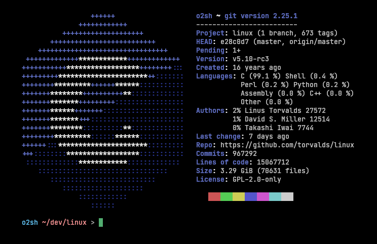

Today I want to share with you some funny Linux tools that I found on the internet. I hope you enjoy them as much as I did. The linux command line is a powerful tool that can be used to do very professional things. But it can also be used to do some funny things. Here are some of the best funny Linux commands that I found on the internet.
Replace cat with bat
The cat command is used to display the contents of a file. But you can replace it with bat.
Bat is a cat clone with wings. It supports syntax highlighting for a large number of programming
and markup languages. It also supports Git integration. You can install it with the following base on your
Linux distribution.
sudo apt install bat
sudo yum install bat
sudo pacman -S bat
sudo dnf install bat
sudo zypper install bat
Look Strange with Cmatrix
Cmatrix is a program that simulates the display of the Matrix code. It is a very funny command that
you can use to impress your friends. You can even use it as screensaver.
Thank to Matrix for this funny command.
Look Like a hacker : Hollywood
Hollywood is a very funny is split screen terminal emulator. and run a each command in a different
window.also change the color of the text and background.
in most of movies hackers use this command to look like a hacker.
Get the details of your computer with Neofetch
Neofetch is a command-line system information tool written in BASH that supports displaying images.
It can display information about your operating system, software and hardware in an aesthetic and
visually pleasing way. It is a very funny command that you can use to impress your friends.
Neofetch is configurable and can be customized to fit your needs.
you can manage the information that you want to show.

Get the details of repository Onefetch
Onefetch is a command-line tool that displays information about your Git repository in your
terminal.
With one fetch you can see the details of your repository like the number of commits, the number of
contributors, the number of lines of code, the number of files, the number of branches, the number of

Customize command line with Starfish
Starfish is a command-line tool that allows you to customize your terminal. It can change the
background color, the text color, the font, the cursor, the prompt, the shell, the shell theme, the
shell plugins, the shell configuration, the shell aliases, the shell functions, the shell history,
the shell key bindings, the shell startup, the shell environment, the shell environment variables.
no matter what you want to change in your terminal you can do it with starfish.
Customize ZSH with oh-my-zsh
Oh My Zsh is an open source, community-driven framework for managing your Zsh configuration.
It comes bundled with a ton of helpful functions, helpers, plugins, themes, and a few things that
make you shout...
you can change the theme of your terminal with oh-my-zsh.